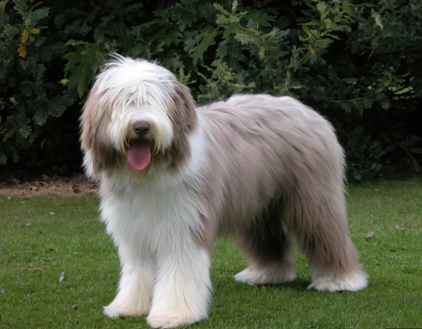

BEARDED
Weight:
40-60 lbs.
Height :
20 in.
22 in.
Length:
Long.
Color:
Any shade of grey or chocolate. May have white blaze, feet, chest,
tail tip may have tan points .
Longevity:
12 – 14 yrs.
Bearded Dog personality
The bearded collies is known for being quick-witted and lively. They are smart, active and can be stubborn or independent. With all that athletic ability and intelligence in one package, they definitely do best with firm, patient training and quite a bit of it. They are usually good with other dogs and can be friendly to a fault. They enjoy working and do very well competing in most of the dog sports including agility and herding. As with most intelligent, active dogs, if bearded collies do not receive enough exercise and attention they can develop some bad habits. Nuisance barking, digging and sometimes chewing habits can occur. They are sometimes too active for small children, and may nip at the heels of running children as if the children were sheep.
What to expect
Bearded Collies can be finicky eaters, which is surprising in such active dogs. A good balanced diet is adequate however, too many treats can lead to obesity even in these active dogs. The dogs require a fair amount of exercise. Ideally they should get a couple of walks daily and a good running, play, or training session as well. Bearded Collies are fairly hardy and often live to 14 or 15 years of age. As with most herding breeds, the Bearded Collie thrives on human companionship and having work to do. The work can range from obedience to agility to working sheep, but they do need training and attention. They will alarm bark, but then leap exuberantly on the newcomer. A few can be shy, so early socialization and a gentle, but firm hand in training are necessary. Grooming is a daily job here. Dogs with the correct harsh coat merely need a quick going over daily except when shedding. If your bearded collie has a soft coat, you will spend much more time untangling mats and removing debris from the abundant coat. Bearded Collies are sometimes shaved by pet owners, but look a bit silly without their coats!
History of the Bearded Dog
One of the oldest herding breeds, the bearded collie is thought to be descended from some Polish lowland sheepdogs left in Scotland in the 1500s. These dogs then crossed with the local herding dogs to produce these herding dogs of the British Isles. Bearded collies have been all-around farm dogs from the start, working livestock and guarding with a carrying alarm bark. While working in deep cover, they will do the characteristic beardie bounce by leaping high to spot their stock! Many of the cute fuzzy dogs in commercials and in Disney films are bearded collies or part bearded collie. They are fun loving, intelligent dogs .